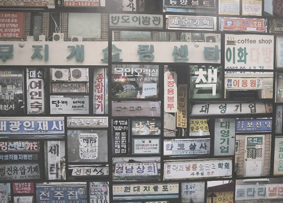

DESIGN AESTHETICS OF RUN_DOWN SIGN IN KOREA

For the image representing the concept of Visual Phenomenon, I want to focus on the design of signboards of run-down commercial areas in Euljiro, Seoul.
Personally, I used to be quite dissatisfied with sign board designs in Korea. The reason was that they seemed solely focused on grabbing attention,
using excessively bold colors and stark contrasts, without considering their relationship to the street or any sense of artistic aesthetics.
When these attention-seeking signs all cluster together, as a viewer, I found the overwhelming amount of information to be chaotic and noisy.
However, I recall a foreigner once capturing these Korean signboards in a video and commenting on how beautiful they looked.
This made me think that perceptions of beauty and ugliness can also differ based on familiarity, novelty, and how we interpret information.
Because Korean is my native language, I can understand all the information presented on these signs, which makes me focus more on the meaning rather than the design.
It led me to judge the signs as lacking in sophistication and one-dimensional. On the other hand, for foreigners who might not understand the language,
the designs themselves would have stood out, and the forms of Hangul characters could have been appreciated as an aesthetic element.
I realized that my judgment of these signs as "ugly" stemmed from their familiarity and the sense of redundancy, rather than the freshness that novelty brings.
Conversely, foreigners might perceive these signs as beautiful due to their exotic charm. This example shows that what may be considered beautiful or ugly can change depending on
the viewer's environment and how much information they can understand. It's fascinating how perceptions of aesthetics can be influenced by familiarity and context - where the line between beauty and ugliness often depends on the level of interest and curiosity that novelty brings.
Source:
Image & Content